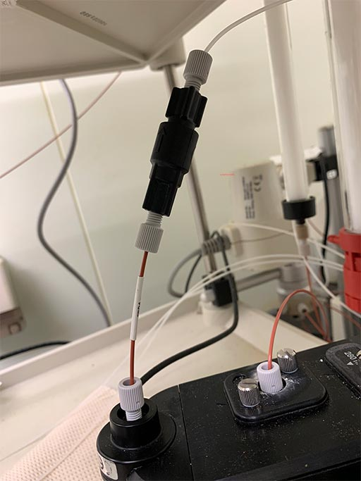

- Filtrate buffer, sonicate to break small bubbles
- Install "Backpressure Regulator" to the chromatography (the Backpressure Regulator helps eliminate
bubble
formation within the detector. without this, flow rate can be unstable). Don't forget to uninstall
after
use.

Connect the backpressureregulator after the Conductivity monitor in the system plumbing.
- Wash column with DW
- Equilibrate column with buffer
- Filtrate or ultra-centrifuge your sample